SSHD2382 · Category 16
Pattern & Ornament
1. Scope
This category has about 16 books. Most are collections of plates, with a small amount of theory:
| Type | Representative books | Use |
|---|---|---|
| World pattern plates | 《裝飾的語法》, 《世界裝飾紋樣圖典》, 《世界裝飾圖案》, 《阿拉伯藝術》 | Looking up patterns by civilisation and period |
| Chinese patterns | 《中國紋樣全集》 (Neolithic to Qing), 《中國經典紋樣圖鑑》, 《敦煌線描》 | The development, structure and meaning of Chinese patterns |
| Folk crafts | 《貴州傳統蠟染》, 《湖北挑花、土錦、藍印花布》 | How a craft decides the form of a pattern |
| Theory | Gombrich, 《秩序感》; Owen Jones's 37 propositions | Why we like patterns, and how patterns should be designed |
Pattern is the oldest visual system: it involves shape (the motif), structure (the rules of arrangement), colour, materials and craft, and cultural meaning all at once. Today's brand supporting graphics, background patterns on packaging, web page backgrounds and textile prints all continue the work of pattern design.
2. Core Concepts
2.1 How Patterns Are Structured
The 《中國紋樣全集》 divides pattern structures into the following types. This classification works in both China and the West:
There are also two common combined forms:
- Border patterns: arranged along the edge of an object, a book page or a fabric, usually as a border repeat;
- Brocade ground with reserved panels: an all-over repeat forms the background (the brocade ground), and a round or flower-shaped "window" (the reserved panel, kaiguang) is opened in it to hold the main image. This is a common technique on Chinese porcelain and brocade, and it also suits packaging design very well.
2.2 Layout Structures for Repeating Patterns
| Structure | Arrangement | Effect |
|---|---|---|
| Block / Full drop | Units line up in a square grid | Stable and regular, but the grid is easy to spot |
| Half drop | Each column moves down by half a unit | Breaks up the grid; the most common choice for wallpaper and fabric |
| Brick | Each row shifts sideways by half a unit | Like laid bricks, with a strong horizontal feel |
| Diamond | Units are arranged along diagonals | Dynamic; common in traditional brocade |
| Mirror | Units are flipped left to right or top to bottom | Symmetrical and dignified |
| Scatter | Motifs seem to be spread at random | Natural and relaxed; common in printed cloth |
2.3 A Map of World Patterns
| Civilisation | Typical motifs | Characteristics |
|---|---|---|
| Ancient Egypt | Lotus, papyrus, scarab, feathers | Flat colour, strict symmetry, strong symbolic meaning |
| Ancient Greece | Fret (Greek key), palmette, acanthus | Careful proportions; the acanthus became the mark of the Corinthian capital |
| Rome and Pompeii | Mosaic, scrolls, grotesques | Builds on Greece, with more richness |
| Byzantium | Gold-ground mosaic, cross, roundels | Religious symbolism, shimmering gold |
| Islamic (Arab, Moorish, Moroccan) | Geometric stars, arabesque, calligraphy | Avoids depicting people; geometry and plants that extend without end symbolise the infinite |
| Celtic | Interlace, knots, spirals | Lines cross over and under without breaking; found in manuscripts |
| Gothic | Pointed arches, tracery, foliage | Developed out of the building structure |
| Renaissance | Grotesque, garlands, scrolls | Revival of classical motifs |
| India and Persia | Paisley (flame motif), tree of life, flowers | Rich colour, many complex layers |
| China | Dragon and phoenix, cloud pattern, fret, scrolling branches, baoxiang flower | "Every pattern must have a meaning, and every meaning must be auspicious" |
| Japan | Family crests (kamon), seigaiha waves, asanoha hemp leaf, cherry blossom | Simple and graphic, with skilful use of white space |
2.4 The Development of Chinese Patterns
timeline title Main stages of Chinese patterns, after the four-volume 《中國紋樣全集》 Neolithic : Fish and frog motifs on painted pottery : Geometric and whirlpool patterns Shang and Western Zhou : Taotie animal-mask pattern on bronzes : Kui dragon and cloud-and-thunder patterns Warring States, Qin and Han : Cloud-and-vapour pattern : Four Divine Creatures Azure Dragon White Tiger Vermilion Bird Black Tortoise : Eaves tiles and pictorial bricks Wei and Jin to Sui and Tang : Honeysuckle and lotus with the arrival of Buddhism : Pearl roundels via the Silk Road : Baoxiang flower and scrolling grass Song, Yuan, Ming and Qing : Scrolling flower branches : Auspicious patterns : Fret, antiques, and waves-and-cliffs patterns
The patterns of each period reflect its beliefs and exchanges: the animal-mask patterns of the Shang and Zhou carry mystery and awe; the clouds and Four Divine Creatures of the Han reflect the wish to become immortal; the lotus, honeysuckle and pearl roundels of the Wei, Jin, Sui and Tang came with Buddhism and the Silk Road; and the Ming and Qing used puns and symbols to express worldly wishes for good fortune.
2.5 How Auspicious Meanings Are Built
The meanings of Ming and Qing auspicious patterns rely mainly on three methods:
| Method | Examples | Meaning |
|---|---|---|
| Pun (homophone) | Bat (fu, which sounds like fu, "good fortune"), fish (yu, which sounds like yu, "surplus"), deer (lu, which sounds like lu, "official salary"), vase (ping, which sounds like ping, "peace") | Good fortune, "surplus year after year" (niannian youyu), an official's salary, peace and safety |
| Symbol | Pomegranate (many children), pine and crane (long life), lotus (integrity), peony (wealth and rank) | Using the qualities of a thing to express a wish |
| Sign | Fret (unbroken continuity), fangsheng interlocking lozenges (two hearts joined as one), swastika (wan) pattern | Abstract shapes with fixed meanings |
When you use these patterns in contemporary design, you must first understand their meaning and the occasions they belong to, to avoid misuse (for example, putting funeral-related imagery on festive packaging). See the section on Chinese elements in 06 Packaging.
3. Principles & Methods
3.1 Owen Jones's Principles of Ornament
In 《裝飾的語法》, published in 1856, Jones summed up his observations of the patterns of many civilisations in 37 "propositions". Below are the ones that are still most useful today (paraphrased):
3.2 Gombrich's "Sense of Order"
In 《秩序感》, Gombrich uses psychology to explain why people need pattern:
- People naturally look for order: our perception expects regularity, so we quickly "finish reading" a repeating pattern and then notice only the places where the regularity is broken.
- Monotony and variety: complete repetition is boring and complete disorder is unsettling; a good pattern strikes a balance between the two. This connects with "variety and unity" in 01 Design Basics.
- Frame and filling: patterns often have a clear border and centre; the eye travels along the border and then settles on the centre.
- Pattern is play: interlacing, symmetry and figure-ground reversal (as in Celtic interlace and Escher-style tessellations) let viewers enjoy the pleasure of "solving a puzzle". See the Gestalt principles in 15 Design Theory & Psychology.
3.3 From Nature to Pattern: Steps of Refinement
flowchart LR A[Sketch from life<br/>observe real flowers and animals] --> B[Simplify<br/>drop details, keep features] B --> C[Transform<br/>exaggerate, geometrise, make symmetrical] C --> D[Organise<br/>single, fitted, repeat] D --> E[Colour<br/>limit colours, consider the craft] E --> F[Apply<br/>textiles, packaging, brand graphics]
- When simplifying, keep the most recognisable features, such as the number of lotus petals and the seed pod, or a fish's scales and tail.
- For geometrising, you can refer to the point, line and plane methods in 01 Design Basics.
- When you make an all-over repeat with the Pattern feature in Illustrator, first check that the four edges of the unit join seamlessly, then test the effect over a large area.
3.4 Craft Decides Form: Folk Dyeing and Weaving
| Craft | Method | Pattern characteristics |
|---|---|---|
| Batik (wax resist) | A wax knife dipped in hot wax draws on the cloth; the cloth is dyed in indigo, then the wax is removed | Blue and white contrast; the wax cracks during dyeing, creating a distinctive "ice crackle"; the Miao of Guizhou often use butterflies, fish, birds and bronze-drum motifs |
| Blue-and-white printed cloth | A resist paste is scraped through a cut paper stencil; after dyeing in indigo, the paste is scraped off | The stencil cannot have isolated areas, so the patterns are made of dots and short lines |
| Cross-stitch (tiaohua) | The design is picked out with needle and thread following the warp and weft of the cloth | Limited by the grid, so images become geometric and stepped |
| Tujia brocade | Woven by hand on a wooden loom | Diamonds, squares and geometric flowers |
These examples show that the limits of materials and craft are often the very source of a style. The same is true in digital design — pixel art, embroidered logos and single-colour screen printing each have their own limits, and you should turn those limits into character.
4. Selected Figures
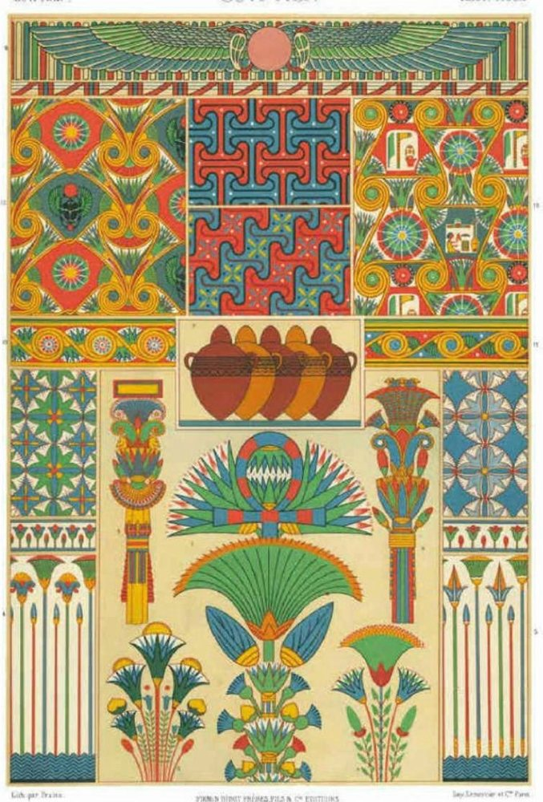
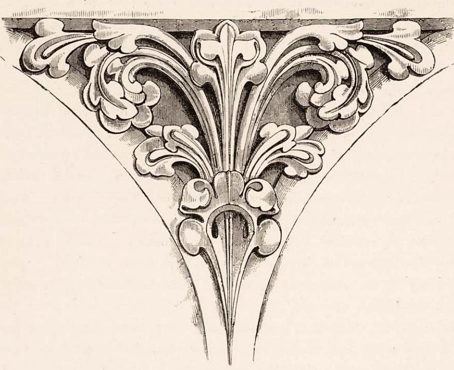
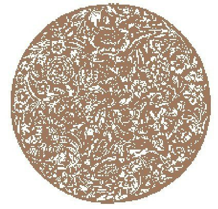
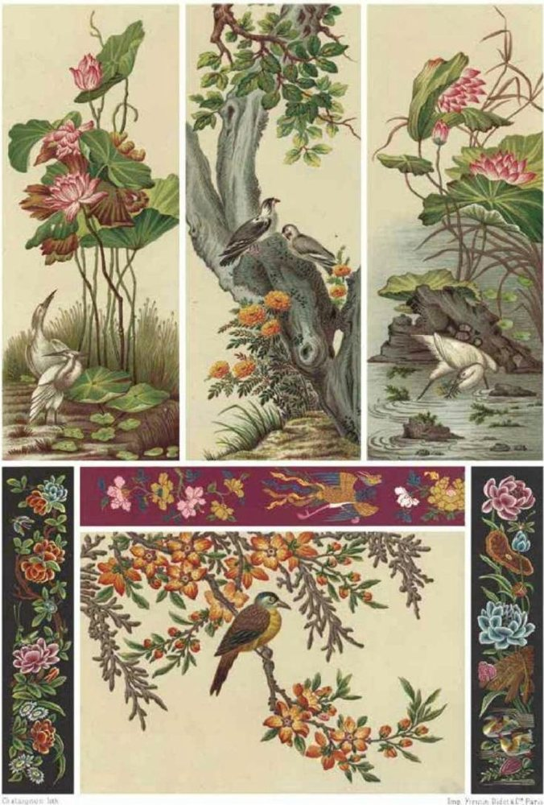
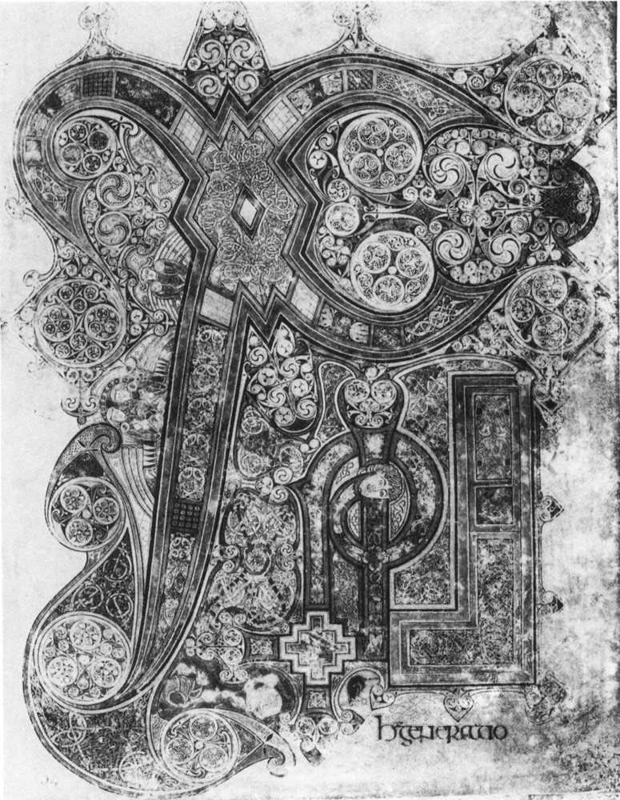
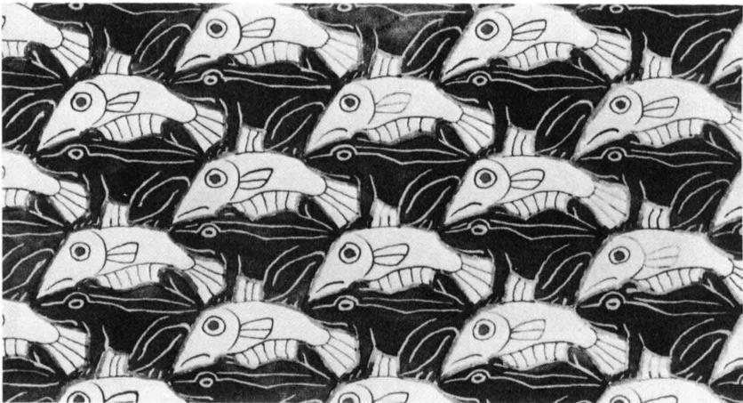
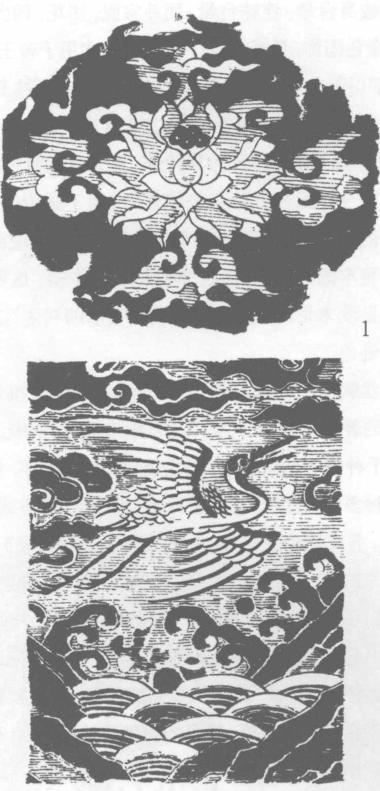
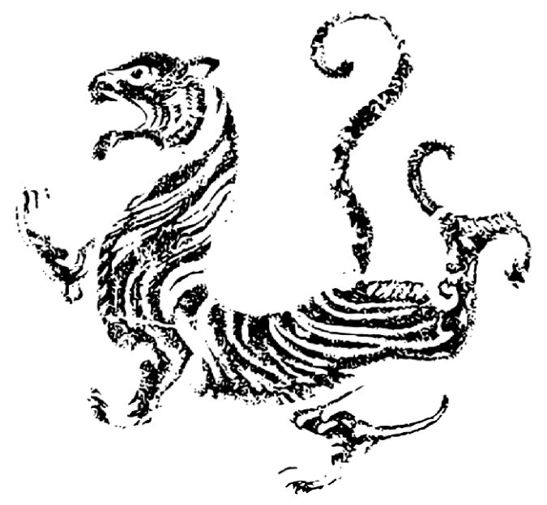
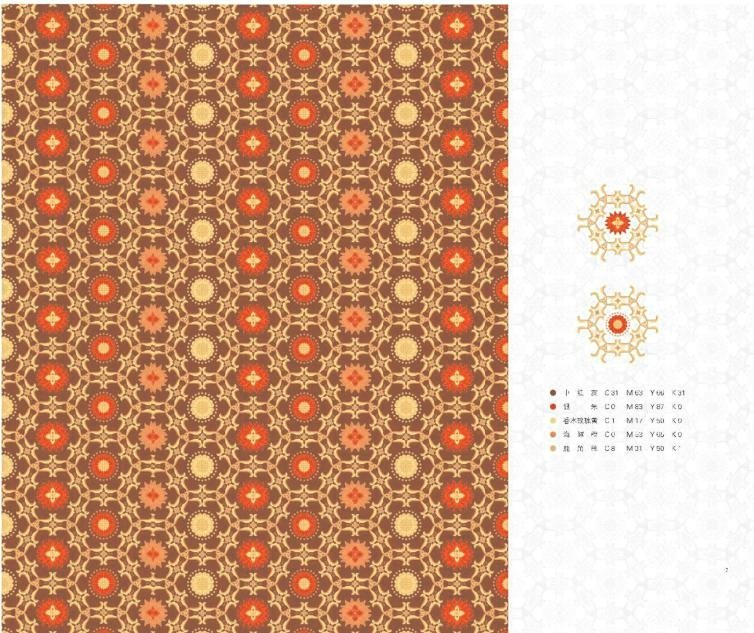
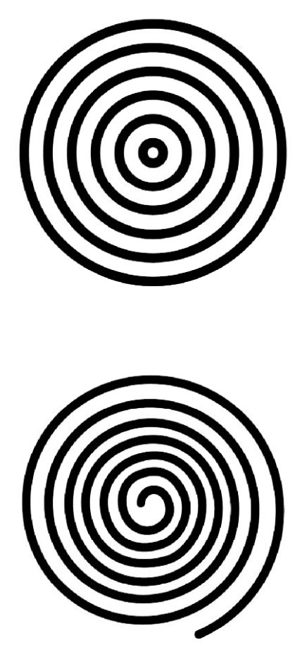
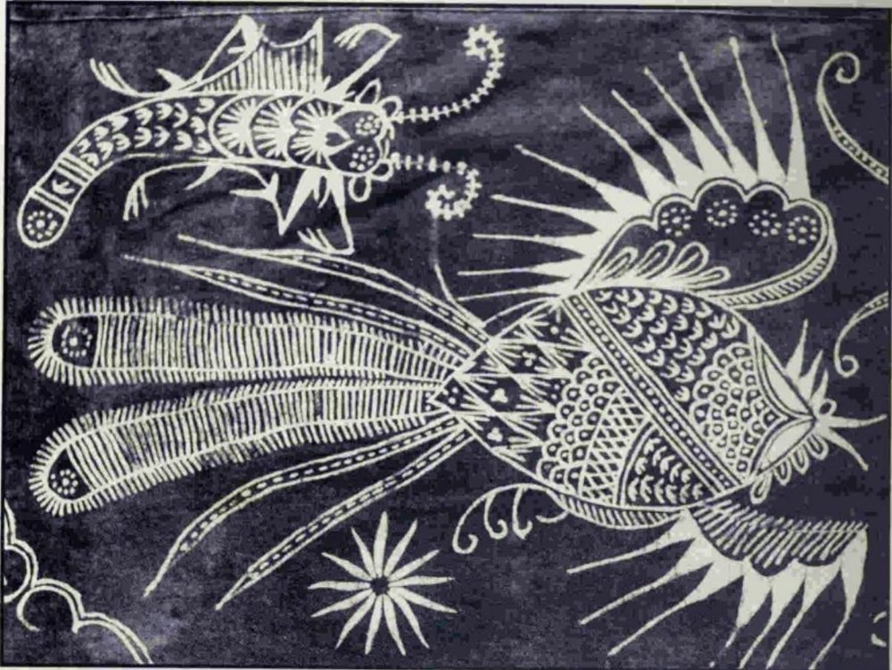
5. Source Bookshelf
Suggested reading order: first browse the 《世界裝飾紋樣圖典》 to build visual impressions → read the 37 propositions in Owen Jones's 《裝飾的語法》 → the chapter "The structure of patterns" in the 《中國紋樣全集》 → look up meanings in the 《中國經典紋樣圖鑑》 → Gombrich's 《秩序感》 (theory, more demanding).
Show 16 titles
- (NEW)世界裝飾紋樣圖典(4000餘種圖案+紋飾百科全書+裝飾藝術寶庫) - L'art arabe 01 - [279]秩序感：裝飾藝術的心理學研究 - [313]中國紋樣集錦：Examples of Chinese Ornament - The Grammar of Ornament - 中國紋樣全集 魏晉南北朝·隋唐·五代卷 - 世界裝飾圖案-1887-85P圖版 - 中國紋樣全集 宋·元·明·清卷 - 中國紋樣全集 戰國·秦·漢卷 - 中國紋樣全集 新石器時代和商·西周·春秋卷 - 中國經典紋樣圖鑑 - 摩洛哥傳統裝飾藝術 - 敦煌線描 - 民間美術：湖北挑花、土錦、藍印花布 - 裝飾文叢特別策劃卷7 - 貴州傳統蠟染-攝影集6. Study Cues
- Sketch a single motif, a fitted pattern, a border repeat and an all-over repeat, using the same motif for each.
- Choose a plant you know well and refine it into an all-over repeat in four steps: "sketch from life, simplify, transform, organise".
- Compare the block and half-drop arrangements. Which one makes the grid harder to see? Why?
- Why are Islamic patterns mainly geometric and plant-based? How does this affect their visual style?
- Name three Chinese auspicious patterns whose meaning comes from a pun, and explain when they are used.
- Why can the paper stencil for blue-and-white printed cloth not have isolated areas? How does this limit shape the form of the pattern?
7. Each Book
Each book in the bookshelf is described below. Every title above links to its section.
(NEW)世界裝飾紋樣圖典(4000餘種圖案+紋飾百科全書+裝飾藝術寶庫)
Scope. This is a collection of plates made for use in the industrial arts. The first volume alone has a hundred plates, numbered right through to the Renaissance plates. The contents are arranged by region and century: Byzantine, Indo-Persian, medieval, and on to the Renaissance, including the wall panelling of the Gallery of Francis I at the Palace of Fontainebleau. The preface to the 1870 reprint explains that the plates were transferred by lithography, and that the marks on the plates were changed to serial numbers to make them easier to look up. The text stresses learning from real examples, because ornament serves architecture, objects and industry at the same time.
Main ideas
- The simplest squares, diamonds and triangles, joined again and again, can make a complete design; guilloche bands and Arab vine scrolls weave lines, flowers, birds, animals and figures into a single structure.
- The criteria for judging are proportion, harmony and symmetry, with the parts serving the whole and variety serving unity. A composition works only when the viewer feels it is settled.
- Ornament can borrow repetition from architecture, relief from sculpture, and colour suited to the subject from painting, but it still has to complete itself as flat decoration.
- Ornament both embellishes fine works and raises everyday objects, which is why it became the most widely used form between industry and art.
- Sources for the medieval plates include fifteenth-century manuscripts, such as borders from a Missal of the Virgin Mary and from a prayer book held in Siena.
Methods
- Choose one plate and record it in three sentences: region or century, carrier (architecture, book or textile), and type of repetition (border, border repeat or all-over ground).
- Check the plate against the book's four criteria: symmetry, proportion, whether the parts belong to the whole, and whether the variety still forms one unified picture. Point to one specific place for each.
- Copy only one repeat unit and its seams, and label it with the plate number.
- Put a Byzantine plate and a Renaissance plate side by side, and write how each handles corners.
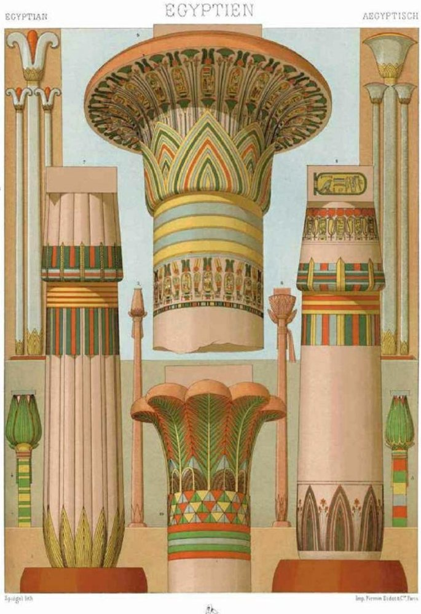
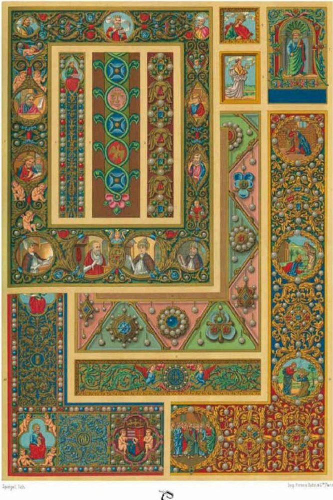
Study cues
- Why does the book think that general rules fixed in advance cannot easily govern ornament? What way of reading would you use to fill that gap?
- On one medieval plate and one Renaissance plate, point out one place each where "the parts serve the whole".
L'art arabe 01
Author: Émile Prisse d'Avennes
Scope. This volume holds the plates of Cairo's monuments from 《阿拉伯藝術》. The contents arrange mosques, tombs, houses, baths and minarets by century. The architecture section runs from the ninth-century Mosque of Ibn Tulun, to the fifteenth-century Mosque of Qaitbay with sultans' tombs and domes shown side by side, and on to seventeenth- and eighteenth-century mansions and domes. The ornament section collects wall facings, floor paving and fragments of mosaic. Students should treat it as a survey archive: first read the century and building name in the list of plates, then look at the elevation, piers or floor.
Main ideas
- One building is broken down into plan, elevation, minaret, dome and door, so each part can be compared piece by piece, instead of giving just one overall view.
- The fifteenth-century Mosque of Qaitbay takes up several plates: the inner and outer elevations, the whole minaret and its details are all drawn separately.
- Domes, columns and piers appear in side-by-side drawings, used to compare outlines rather than to tell the story of a single masterpiece.
- Fifteenth- and sixteenth-century mosaics, wall facings and paving get their own plates; geometry is the structure of the floor, not just a border.
- Houses (such as Beit el-Emir) and bathhouse doors sit in the same list as mosques: the city's ornament includes its homes.
Methods
- Copy one building's century and name from the contents, and in your notes circle which part the plate actually draws: elevation, minaret, dome or door.
- Trace three outlines from the side-by-side dome drawings, comparing only the outer profile and the drum, without filling in the inner patterns.
- Take one paving or mosaic plate and extract its skeleton on squared paper, marking the repeating polygons.
- Write the century on every note. This book is ordered by century, not by an alphabetical list of subjects.
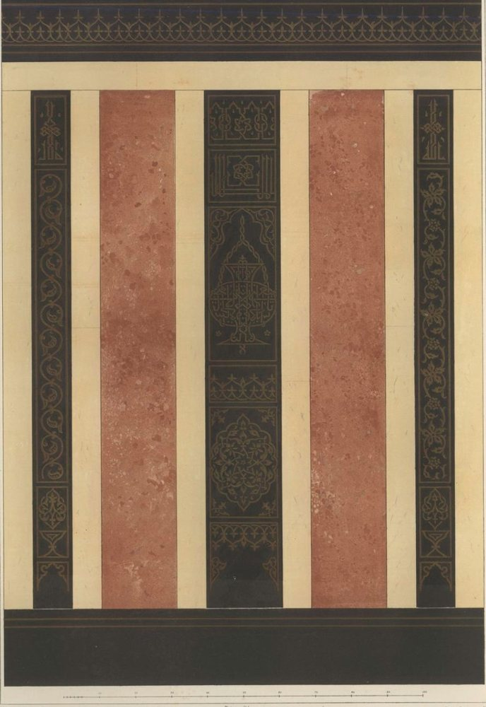
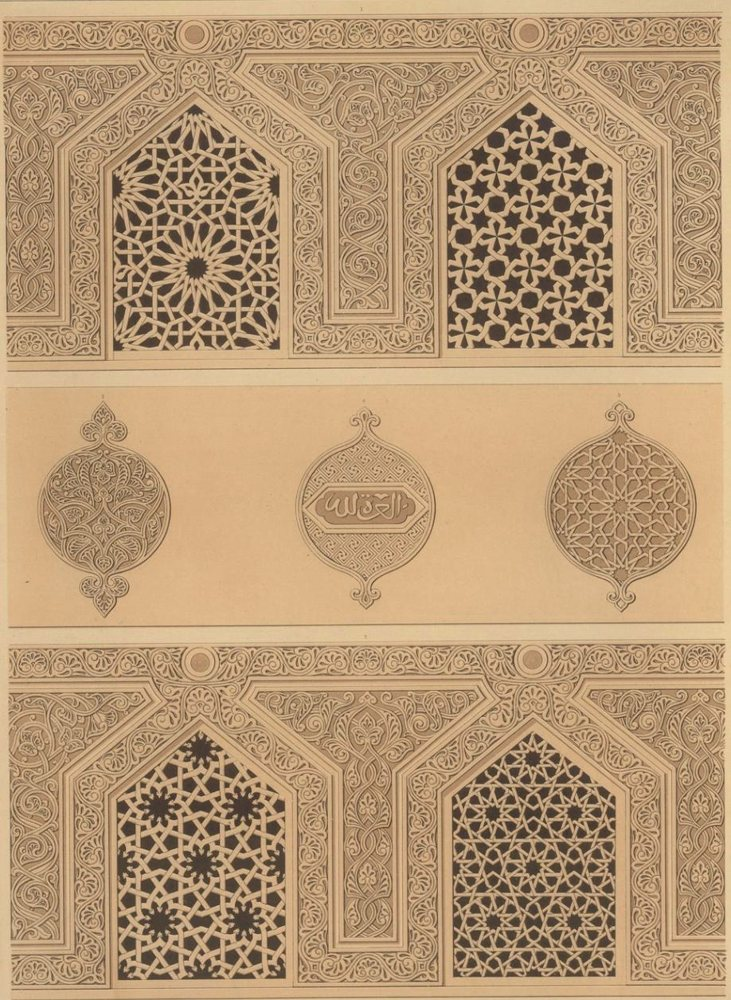
Study cues
- If you want to compare Cairo's minarets, which kind of plate in the contents should you start from? Which century do you need to note at the same time?
- Which is better for extracting a geometric skeleton, a paving plate or an elevation plate? Explain using the name of one kind of plate in the book.
秩序感：裝飾藝術的心理學研究
Original title: The Sense of Order: A Study in the Psychology of Decorative Art
Author: E. H. Gombrich
Scope. This book studies why people can feel order in decoration, and puts natural patterns, man-made patterns and taste under the same question. The introduction moves from order and direction, Gestalt, natural patterns, man-made order and combinatorial geometry, to monotony and variety, movement, play and art. Later it discusses the moral pressure of taste, classical simplicity, the Rococo debate, design and fashion, and the threat that machine production poses to ornament. Its examples are chosen very strictly, so as you read, grasp the concepts; do not expect it to cover every kind of pattern.
Main ideas
- Order can come from direction, repetition and hierarchy. Hierarchical patterns are used to explain "unity in variety": the parts differ, yet they still come together as one whole.
- Here Gestalt theory is used to explain how people see scattered dots as a pattern, not to supply a set of rules for making forms.
- The book carefully tests Riegl's theories, including his history of the acanthus scroll and 《羅馬晚期的工藝美術》, and states clearly where it agrees and disagrees.
- "The logic of Vanity Fair" explains that once people start competing in expense, splendour or elegance, the situation pushes the race onwards. Fashion therefore has its own momentum.
- The author says plainly that the subject is endless, so this book does not replace pattern atlases such as Petrie's 《古代世界的裝飾圖案》.
Methods
- Pair each concept with one image: Gestalt, hierarchy, or monotony and variety. Use half a page to answer only that one concept.
- Find one natural pattern and one man-made pattern, and write where each one's order comes from: direction, repetition or hierarchy.
- Use "the logic of Vanity Fair" to write a contemporary example, and say whether the competition is in expense, splendour or elegance.
- When you reach the section on machines and ornament, record separately what the rhythm of handwork lost, and what machine repetition made stable.
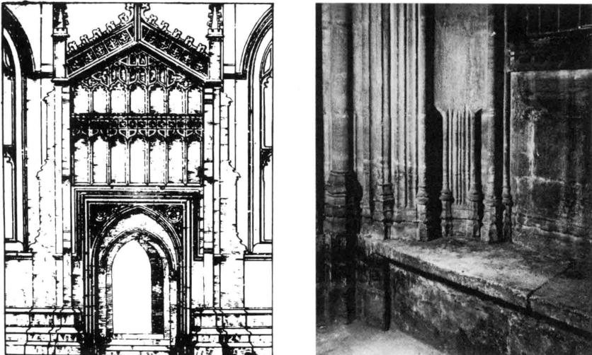
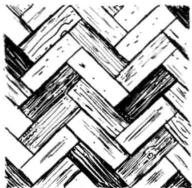
Study cues
- In a hierarchical pattern showing "unity in variety", which level is unified and which level varies?
- How does the logic of Vanity Fair explain why ornament grows ever more lavish, or, the other way round, ever plainer? Answer using the areas of competition named in the book.
中國紋樣集錦：Examples of Chinese Ornament
Original title: Examples of Chinese Ornament Selected from Objects in the South Kensington Museum and Other Collections
Author: Owen Jones
Scope. This is a book of plates in which Jones reads Chinese patterns through his propositions on ornament. The text has notes on the plates and analyses them by Propositions 11, 12 and 13. The discussion centres on large enamel vessels: first fix the positions of the main flowers, then link them with flowing stems, and finally fill the gaps until the tone is even. The book also uses the Roman scroll as a comparison, showing that "first fixed points, then stems and leaves winding round them" is a step shared by many Eastern patterns; what marks Chinese enamel is that its main flowers are especially large.
Main ideas
- The main flowers are placed first, where they best open out the vessel's form, dividing the curved surface into roughly symmetrical, proportioned areas.
- Once these centres are fixed, a flowing line connects them; the line then cuts the triangular gaps into irregular pieces.
- Secondary flowers or large leaves grow from this continuous line, still balanced in triangles, but looser than the main flowers.
- Smaller buds and stems keep filling in until the depth of tone across the whole surface is close to even and it looks settled.
- Although the main flowers are large, the details on their faces break up the colour areas, so a big flower does not become an isolated patch of dense colour. Roman patterns, by contrast, mostly have one scroll growing out of another and then curling round a flower.
Methods
- On the outline of a vase, first mark the main flowers, and check whether they divide the surface into areas that correspond to each other.
- Connect these centres with one continuous line, add secondary flowers and leaves, then fill with small shapes until the tone is close to even. Hand it in as three layers; do not fill everything in one go.
- Against Proposition 11, 12 or 13, write one point that the plate meets, and show on the image where the lines grow from and whether the joins flow smoothly.
- Use the same steps to redesign a round dish or a square scarf. Once the form changes, you have to recount the number of main flowers.
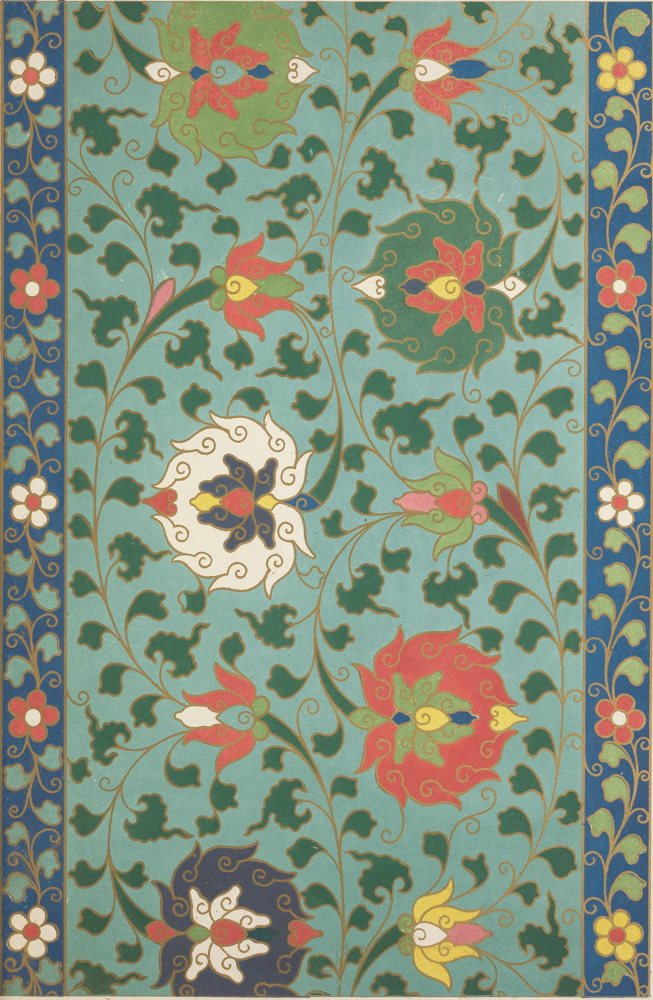
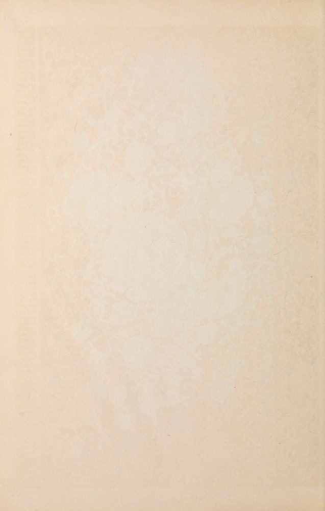
Study cues
- In the book's order of main flowers, flowing line, secondary flowers and leaves, and small fillers, which step is responsible for "dividing the surface into areas"?
- Why can the large flowers on Chinese enamel still keep an even tone? Answer using the details on the flower faces.
The Grammar of Ornament
Author: Owen Jones
Scope. 《裝飾的文法》 uses numbered propositions plus 112 colour plates to test its rules against historical patterns. The preface explains that the material came from many hands: Arab ornament from Cairo (James Wild), stained glass (Bury), the Elizabethan period (Richardson), Byzantine (Waring), Celtic (Westwood), and the Renaissance and Italian periods (Digby Wyatt). Christopher Dresser supplied a plate that gathers natural flowers into geometry. The section on colour is discussed against George Field's colour equivalents.
Main ideas
- The propositions come first and the plates after. The job of the plates is to let a proposition be pointed out in a specific style, not to replace it.
- The collection spans regions and crafts: architectural polychromy, glass, metal and textiles can all enter the same grammar.
- The Arab material gathered during a long stay in Cairo is only part of a larger collection in the book, so do not read it as a complete catalogue of Cairo.
- Dresser's plate arranges natural flowers geometrically, to show that plants must go through construction when they enter ornament.
- The colour plates discuss the share of blue in ancient examples, and use Field's colour equivalents; some objects follow Arab practice on the outside and Persian practice on the inside.
Methods
- First copy the number of a proposition, then find the plate that tests it, and draw the construction lines that the proposition talks about on a photocopy.
- For one subject (border, all-over ground or capital), put plates from two regions side by side, and write one sentence on each one's difference in construction.
- For a colour exercise, record only the main colour and the colours used to balance it, and note whether you referred to Field's colour equivalents.
- When you hand in work, write the region, the craft and the proposition number. If any of the three is missing, you have not used this book fully.
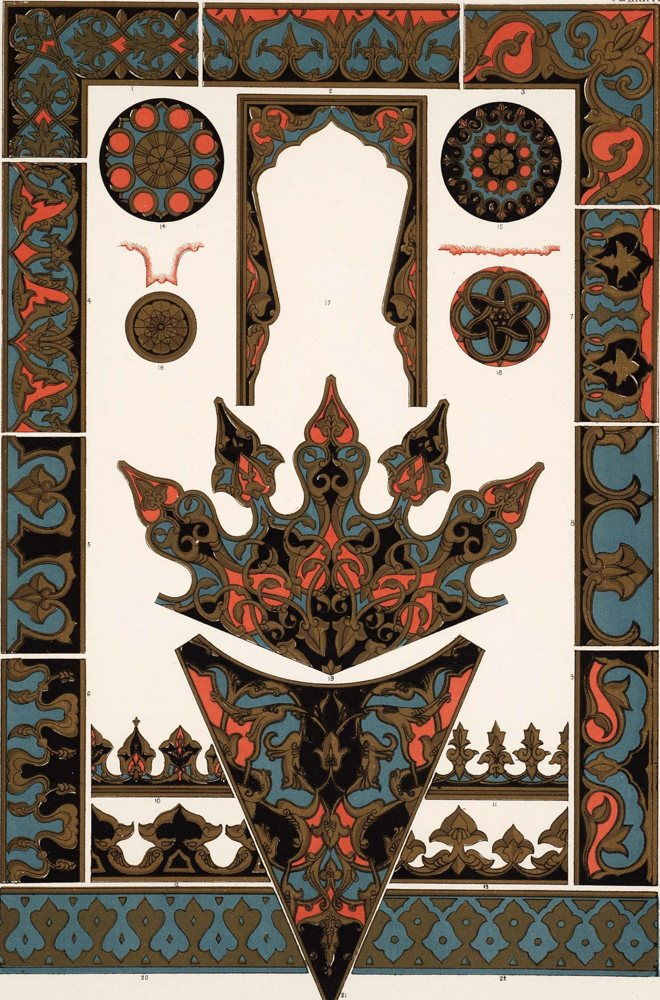
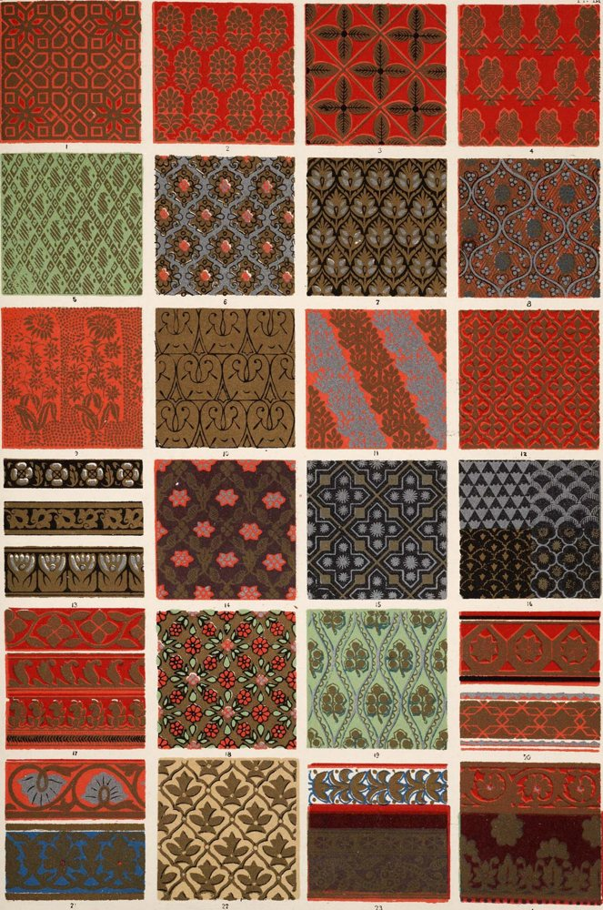
Study cues
- In this book, what are the propositions and the 112 plates each responsible for? Which step do you miss if you only read the plates?
- If you want to study "how plants enter geometry", whose plate should you look for?
中國紋樣全集 魏晉南北朝·隋唐·五代卷
Scope. This volume covers the Wei, Jin, Northern and Southern Dynasties, the Sui and Tang, and the Five Dynasties. Patterns are grouped by carrier into carving, Dunhuang, textiles and embroidery, and ceramics. Carving is further divided into plants, animals, figures and geometry. The plant section uses two lines of development, scrolling branches and the lotus, to link the first buds in the Han, the spread in the Northern and Southern Dynasties, and the peak in the Tang. The textiles section includes cloth woven with gold and silver. As you read, follow one pattern through; do not treat the whole volume as a timeless library of source material.
Main ideas
- Scrolling branches have several kinds of base line: a single wave with flowers and leaves threaded between its curves; parallel double curves (rare, seen on Sui steles); intersecting curves (common on Tang steles); and lines that wind round in all directions following the wave.
- The most distinctive Tang type on the sides of steles places figures, birds, animals, flowers and fruit inside each curve of the wave. The side of the Stele of Chan Master Dazhi uses a wavy scrolling branch as its base line, with peonies in full bloom and, among them, phoenixes, lions, mandarin ducks, small Buddha figures, birds and animals.
- Scrolling branches can be large or small, square or round. Most are made as border repeats and borders, but they can also be single motifs and all-over repeats. The book sees the two Han dynasties as the budding stage, the Northern and Southern Dynasties as the spread, and the Sui and Tang, especially the Tang, as the peak.
- The lotus already decorated vessel lids on Eastern Zhou bronzes. After Buddhism arrived, it became the sign of the Pure Land; in the Yungang, Longmen and Gongxian caves it spread from halos to Buddha pedestals, cave ceilings and borders. Lotus petals on caisson ceilings vary: jewel-adorned, broad and plump, or turning around the centre.
- The baoxiang flower and phoenixes and cranes holding flowers in their beaks, on Dunhuang murals, textiles and bronze mirrors, are another set of carriers for plant and bird motifs from the same period.
Methods
- Make a timeline of scrolling branches: copy one type of base line each from the Han, the Northern and Southern Dynasties, the Sui and the Tang, and note the book's examples (pictorial bricks, Yungang, Longmen, steles).
- Copy one curve from the side of the Stele of Chan Master Dazhi, and label the base line, the peony, and the birds, animals or figures inside the curve separately.
- Split the lotus into two columns: religious settings (halos, Buddha pedestals, caisson ceilings) and everyday objects. Find one example of each in this volume.
- Record the same motif (lotus or baoxiang flower) once each in carving, Dunhuang, textiles and bronze mirrors, noting the line weight and whether the line is continuous.
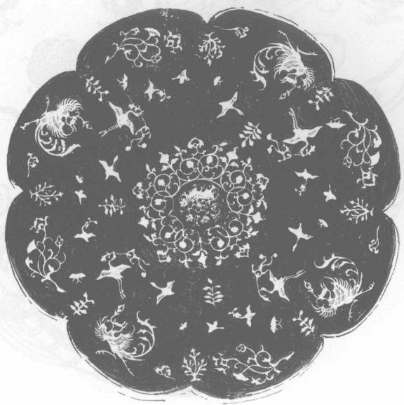
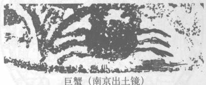
Study cues
- Of the four base lines for scrolling branches recorded in the book, which is rarer on Sui steles? What is the most distinctive arrangement on the sides of Tang steles?
- How did the use of the lotus pattern differ in the Eastern Zhou and at Yungang? Give one kind of object from the book for each.
世界裝飾圖案-1887-85P圖版
Author: H. Dolmetsch
Scope. These are the plates of the 1887 《裝飾寶庫》 (Treasury of Ornament), about 85 of them, published by Hoffmann in Stuttgart, with text under the images giving their sources. The contents are divided by civilisation and craft: Egyptian painting and architecture, Assyria, Greek polychrome architecture and pottery, Roman and Pompeian mosaic, China, Japanese lacquer, Indian metalwork, Persian architecture, textiles and metalwork, and Arab textiles, embroidery, and wood and metal decoration. Each small figure is numbered and, as far as possible, matched to a specific site or museum, which makes it good for copying "one civilisation, one craft" at a time.
Main ideas
- The Egyptian section puts the winged sun disc, papyrus and palm capitals, paintings from mummy cases and temple mouldings together; the capitals correspond to the open papyrus, the papyrus bud and the palm.
- The captions pin each object to a place: Dendera, Philae, Luxor, Thebes, Edfu, and the mummy cases in the Louvre and the British Museum.
- The Assyrian section admits Egyptian influence, while stressing that its own geometry and lavish architectural decoration remain independent.
- Later plates turn to textiles, knotting and lacquer, showing that the same "treasury" collects both architectural painting and portable crafts.
- From the medieval period on, the captions quote architectural dictionaries (such as Viollet-le-Duc) to date French architectural ornament, rather than just offering a pretty border.
Methods
- Choose a page from one civilisation, copy only one numbered small figure, and write down the source given in the book (temple, museum or type of craft).
- Egyptian capital exercise: trace one outline each for the open papyrus, the papyrus bud and the palm, and note the figure numbers.
- Take one unit from the "embroidery, weaving, knotting, lacquer painting" group and write its direction of repetition.
- When making comparisons, the two civilisations must be two headings from the contents; do not invent your own categories.
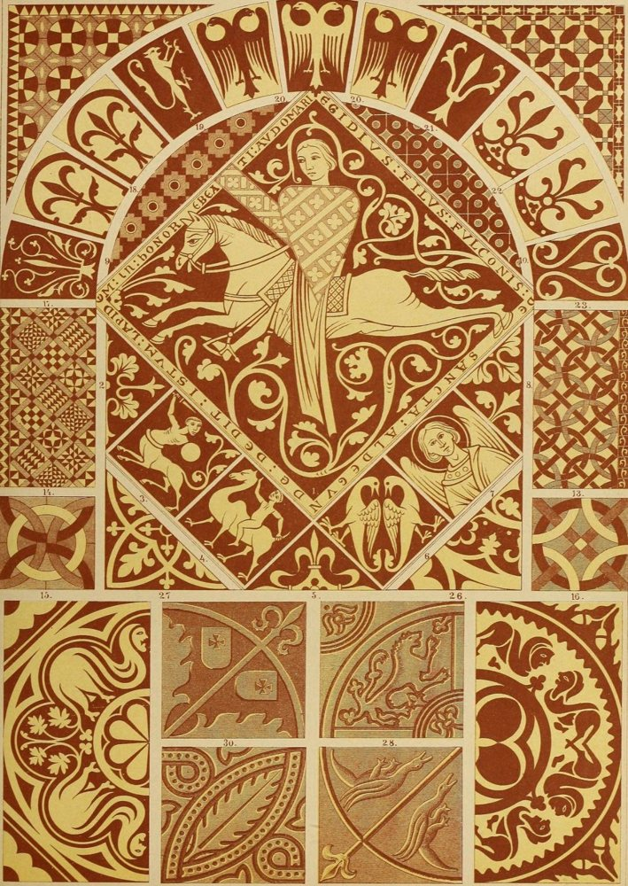
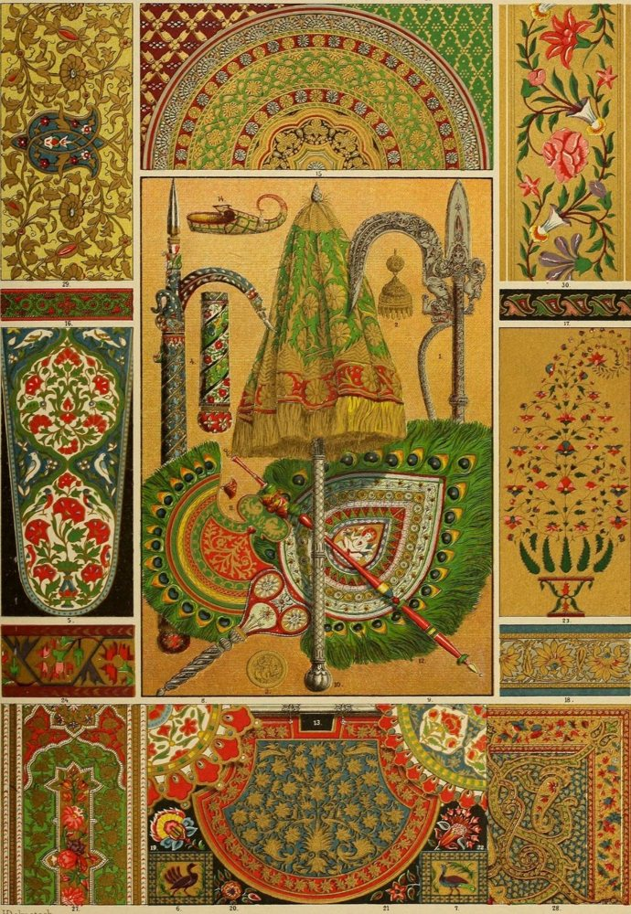
Study cues
- How does the book use plants to distinguish Egyptian capitals? Say which forms the papyrus and the palm each correspond to.
- If a plate shows both architecture and lacquer painting, which two things must you at least state when you hand in your work?
中國紋樣全集 宋·元·明·清卷
Scope. This volume covers the Song, Yuan, Ming and Qing in turn. Its main carrier is porcelain, followed by textiles and embroidery, architectural painting, lacquer and bronze mirrors. Porcelain patterns are further divided into plants, animals, figures and landscape, plus the leaf decoration and papercut appliqué that first appeared in the Song. A separate section explains how patterns are structured and how images are shaped. For plants, the main threads are the peony, lotus, plum blossom, chrysanthemum and scrolling branches, and real objects are used to show how the flavour of the four dynasties differs.
Main ideas
- The crackle of Song Guan and Longquan wares ("fish-roe" crackle and the fine "hundred-fold" crackle) and the iron painting on a white ground of Cizhou ware are two different kinds of decoration: one relies on cracks in the glaze, the other on brush painting, sgraffito, and incising and filling. Cizhou ware brought scrolling branches, insects and fish, and the brushwork of Chinese painting into everyday wares.
- Yuan porcelain has large, thick bodies, and blue-and-white and multi-layered decoration took off; scrolling peonies, fish and water weeds, dragons in clouds, mandarin ducks in lotus ponds, pine, bamboo and plum, and figure stories are common. Ming porcelain was concentrated at Jingdezhen: the Xuande period favoured figures, the Chenghua period has its chicken cups, from the Jiajing period on flowers were set on brocade grounds, and Wanli-period altar vessels carry "mantra script" in Sanskrit and Tibetan.
- Qing porcelain developed overglaze blue, ink black, gold, famille rose and painted enamel (falangcai). Kangxi wares often show dragons and phoenixes, warriors on horseback, ploughing and weaving scenes, and poems; Yongzheng wares mostly show cut-branch flowers and birds; Qianlong wares pursue the ingenuity of imitating other materials. Yixing purple clay ware has the refinement of Chen Mingyuan and the simple honesty of Shao Daheng.
- The book describes the peony on porcelain across the four dynasties like this: plain and pure in the Song, sturdy and bold in the Yuan, elegant in the Ming, and elaborate in the Qing. The most typical form is the rising, falling and turning of scrolling peonies.
- In the Song, the lotus gradually lost its purely Buddhist meaning and was shown from the side, together with lotus leaves and seed pods; before the Song it was mostly a round flower seen from above, with the seed pod in the centre.
Methods
- Make a four-panel peony chart: match each of the Song, Yuan, Ming and Qing with one porcelain piece or stone carving from the book, and write only one feature of form in each panel.
- Draw a Song-style lotus seen from the side; it must include a lotus leaf or seed pod. Then note that it was used on everyday objects.
- Besides porcelain, choose one of textiles (such as Ming lantern brocade), architectural painting, lacquer or bronze mirrors, and write which skeleton the pattern keeps when it moves to the new material.
- For one Cizhou piece, write both the subject (scrolling branches, or fish and birds) and the technique (black painting, sgraffito, or incising and filling).
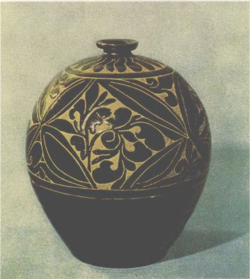
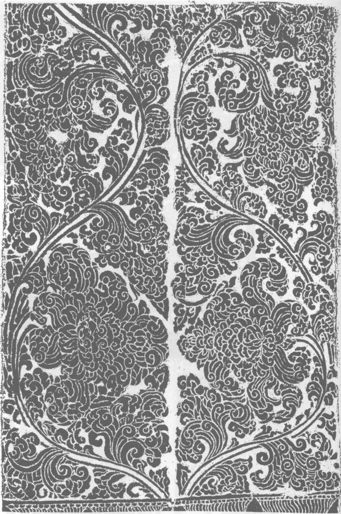
Study cues
- Which four words does the book use to sum up the peony on Song, Yuan, Ming and Qing porcelain? Write them in dynasty order.
- Compared with the round lotus seen from above before the Song, which extra parts does the Song lotus pattern have?
中國紋樣全集 戰國·秦·漢卷
Author: Wu Shan
Scope. This volume is divided into the Warring States, Qin and Han. For the Han, the focus is on pictorial bricks and pictorial stones, grouped into animals, figures, plants, geometry, architecture and landscape; another major group is bronzes, bronze mirrors and belt hooks. Bronze mirrors are further dated in phases: Warring States, Qin, late Qin to early Han, and from Emperor Wu to the mid Western Han. The pictorial stones covered include Xiaotangshan, the Wu Family Shrines and Yinan in Shandong, Nanyang in Henan, Sichuan, northern Shaanxi and Xuzhou in Jiangsu, and the book compares how they were carved. Plants are mostly used as borders; animals are the most common main motifs.
Main ideas
- Han pictorial carving took over the hunting, battle, chariot-and-horse and banquet scenes of Warring States bronzes and lacquer, and carved them instead on stone shrines, stone gate towers and tomb chambers. Early work is mainly incised line; later work is mostly low relief with incised line.
- The book is clear about regional character: Shandong and northern Shaanxi are fuller and more robust, Henan values force, Jiangsu is more archaic and plain, and Sichuan is light and lively. Nanyang stresses movement; Yinan has large scenes and is seen as a kind of transition towards the Northern and Southern Dynasties.
- Animals are the most common subject, followed by figures. Plant forms mostly serve as borders, and geometry mostly as secondary patterns. Architecture and landscape that can stand on their own appear on pictorial bricks.
- The horses on Sichuan pictorial bricks change posture with the story, as with mounted officials, ceremonial halberd bearers and mounted musicians; the horses from Luoyang are mostly incised, set in rows, and strongly decorative.
- Warring States bronzes with hunting, banquet and archery scenes use engraved lines to lay out several episodes on one vessel; Qin and Han bronzes include a rhinoceros-shaped vessel inlaid with gold and silver, gilded wine warmers with cloud patterns, and bird and animal patterns.
Methods
- Choose pictorial stones from two regions, and for each write the carving method, one subject, and the book's judgement of that region's character.
- On one image, mark the main motif and the borders in two colours, and check whether the plants really are mostly at the edges.
- Copy one episode from a Warring States hunting or banquet bronze, and use arrows to show the direction of the figures: stretching one way, gathering towards the centre, or in parallel rows.
- Make notes on bronze mirrors for only one of the book's phases; do not draw Warring States mirrors and Han mirrors on the same unlabelled sheet.
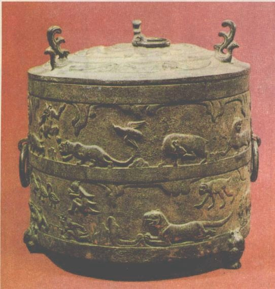
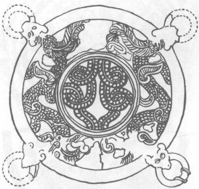
Study cues
- How does the book sum up the different characters of the pictorial stones of Shandong, Henan and Sichuan? Use the book's own descriptive words for each.
- Why are plant patterns said to be mostly borders on pictorial bricks and stones? What is usually the main motif?
中國紋樣全集 新石器時代和商·西周·春秋卷
Author: Wu Shan
Scope. The main text of this volume covers the Neolithic, and the Shang, Western Zhou and Spring and Autumn periods. Patterns are divided into geometric, animal, plant and figure types. The plates focus on painted pottery from Gansu and Shang and Zhou bronzes. The preface at the front traces the styles of later periods all the way to the Ming and Qing, to show that each period carries on from the last yet differs from it; when you hand in work, your images must come from this volume's painted pottery or bronzes, and later examples from the preface may only go in the later columns of your timeline.
Main ideas
- Neolithic painted pottery is mainly geometric. The book's plates include a painted pottery dou (stemmed bowl) with dot patterns and a painted jar with sawtooth patterns from Gansu, where the decoration runs right round the vessel's form.
- From the Shang to the Spring and Autumn period, bronzes turned animal patterns into units suited to casting: whorls, double-headed patterns, triangular stylised kui dragons and coiled serpent patterns all appear on vessels from the Western Zhou to the Spring and Autumn period.
- The preface describes the Neolithic as "pure and plain", and the bronze decoration of slave society as "mysterious and awe-inspiring". These are judgements of style, which you need to check against specific patterns.
- Geometric, animal, plant and figure patterns are separated in the contents. To find how many early plant and figure patterns there are, look in this volume's chapters; do not work backwards from later volumes.
- The whole collection stresses that the differences between periods come from the times themselves. The task of this volume is to see how geometry finds its footing, and how animal patterns become strict and orderly on bronze.
Methods
- Copy one repeat unit (dots or sawtooth) from a piece of Gansu painted pottery, and note the vessel type and where it was excavated.
- Reduce the kui dragon, whorl or coiled serpent pattern on one Western Zhou or Spring and Autumn bronze to a geometric skeleton, and note its period.
- Find one example in this volume for each of the four pattern types. If one type is rare in this period, write down which chapters you looked through.
- If you quote a sentence from the preface about styles after the Song, you must also attach a piece of painted pottery or a bronze from this volume as the object you actually analyse.
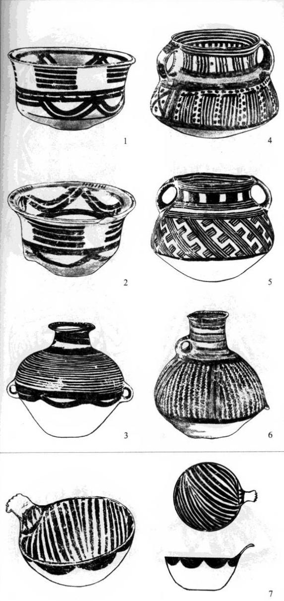
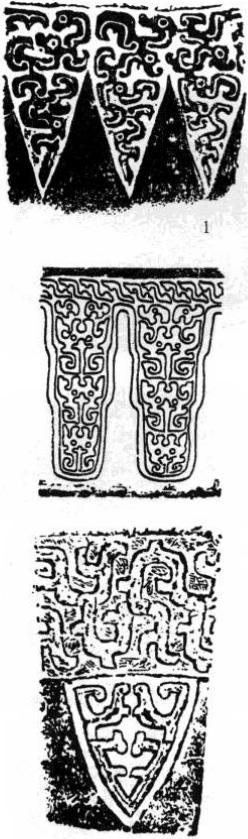
Study cues
- In this volume's plates, on what objects do the dot and sawtooth patterns appear? In which province were they excavated?
- What are the preface's two judgements of style for the Neolithic and the Bronze Age? Check each against one pattern from this volume.
中國經典紋樣圖鑑
Author: Huang Qingsui
Scope. This book picks 80 classic patterns from objects, textiles and buildings. For each it gives an introduction, its structure and its applications, with line drawings, colour images, a single motif and colour values, so it can be used directly in design. The material ranges from the cicada pattern on Shang bronzes and the baoxiang flower on Tang caisson ceilings, to the badayun after the Song, and the lantern pattern, waves-and-cliffs, the Two Immortals of Harmony, the fret and the phoenix on cloisonné of the Ming and Qing. It is a reference book: one section per pattern, not a general history.
Main ideas
- The badayun ("eight-way halo") spreads in eight directions, vertical, horizontal and diagonal, using squares, circles and polygons as a framework; inside the frames it is filled with ancient coins, tortoiseshell hexagons, key patterns, frets, chain links and flowers and birds in the centre. It rose after the Five Dynasties, became an important brocade pattern in the Song, Ming and Qing, and in the Ming was often used for mounting paintings and calligraphy.
- The Eight Auspicious Symbols are the Dharma wheel, the conch shell, the precious parasol, the white canopy, the lotus, the treasure vase, the golden fish and the endless knot. They were originally Buddhist treasures and later became folk auspicious motifs; the treasures are often linked by streaming ribbons or lotus pedestals.
- The chequer pattern (fangqi) runs across and down like a chessboard, in the same directions as the warp and weft of cloth, so it became a common skeleton in textiles; the book also identifies a chequer with inset flowers.
- The sheep pattern can appear with auspicious phrases: a Han bronze basin carries the words da ji yang, "great luck, sheep", where yang (sheep) stands for xiang ("auspicious"), so the phrase reads as "great good fortune". In the Ming and Qing, sheep also appear on porcelain and brocade of the san yang kai tai type ("three yang bring prosperity", a pun in which three sheep stand for the returning yang force of spring).
- Each pattern comes with a single motif and colour values. You can keep the structure and swap the subject; that is how the book is meant to be used.
Methods
- Choose one pattern and hand in your work in three columns: introduction (period and carrier), structure (skeleton) and application (what it is used on).
- When drawing a badayun, first draw the eight directions, then fill the framework with only one geometric secondary pattern and one main flower.
- Copy one set of colour values from the book onto a small draft. You can change the subject, but do not change the skeleton or the number of colours.
- List the names of all eight of the Eight Auspicious Symbols, and note the use the book says they later had as folk auspicious motifs.
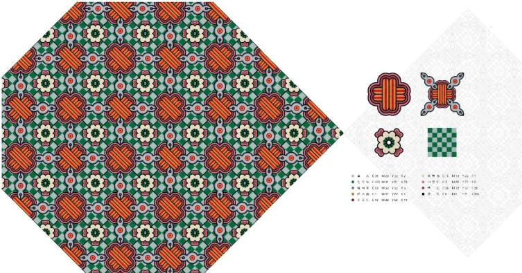
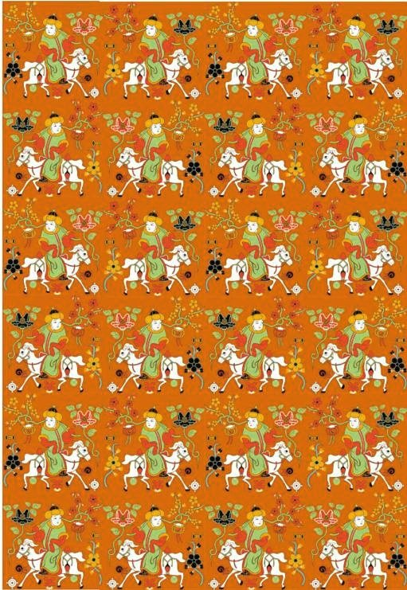
Study cues
- Which eight directions does the "eight" in badayun refer to? Which geometric secondary patterns are usually also filled into the framework?
- Why does the chequer pattern suit textiles so well? Answer in terms of warp and weft.
摩洛哥傳統裝飾藝術
Scope. This is a set of plates of Moroccan decoration; its French title is La décoration marocaine. The plates include tin-glazed pottery from Fez, painted wooden shelves and painted book covers. The text uses tribal rugs to explain rural geometry: the white ground of the Beni M'Guild, the purplish red of the Zayane, the green and orange of the Beni M'Tir, the black and white of the Glaoua, and variants from places such as Agourai. The focus is on decoration from two ways of life: the straight-line geometry of the tent and the kasbah, and the other style of painting and all-over decoration that came after moving into the cities.
Main ideas
- Each tribe's rugs have their own ground colour and borders, but they all vary on a shared base, almost one style per village.
- The weavers' imagination is contained within straight lines, zigzags and geometric shapes; colours are set against each other as solid blocks, yet stay harmonious.
- The pottery keeps very early features. The book groups dishes and vases painted black on a red ground from places such as Zerhoun, Tsoul and Beni Ouarain together with ancient pottery from Knossos, Mycenae and Susa for comparison.
- When Berbers moved into the cities, they left rugs, blankets, cushions and jewellery behind with rural life. City decoration pursues a different, more lavish character.
- In the plates, the city crafts include Fez tin-glazed pottery, painted wood and painted covers, with related works held in the Rabat museum.
Methods
- Choose one tribal rug and record: the tribe or place, the ground colour, the main colours, and whether the pattern is contained in straight lines or zigzags.
- Make a separate page on a city plate (tin-glazed pottery, painted wood or a painted cover), and write how it uses curves, painting and all-over decoration.
- Copy the same geometric motif (diamond, sawtooth or star) once on a rug and once on a pottery dish.
- Note the place of origin or collection for each piece (the book mentions the Rabat museum, Fez and other places).
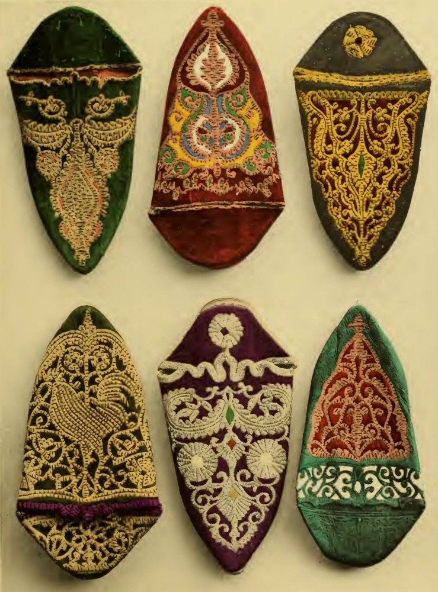
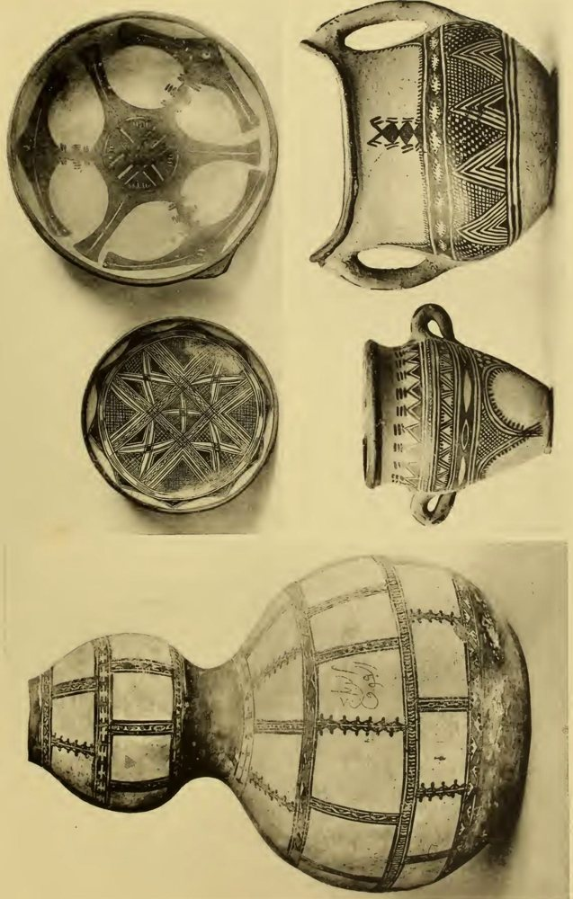
Study cues
- In the tribal rugs the book describes, why does the imagination still not get out of control? Answer in terms of both line and colour.
- Of Fez tin-glazed pottery, painted wooden shelves and painted covers, which would you use to extract the curves of city decoration?
敦煌線描
Author: Xie Chengshui
Scope. This is a selection of the finest line drawings of the Dunhuang murals, catalogued by cave and dynasty, from the Northern Liang, Northern Wei, Western Wei and Northern Zhou to the Sui and Tang. It also includes the Thousand-Armed, Thousand-Eyed Guanyin in the Yuan dynasty Cave 3, and silk paintings from the Library Cave. Subjects include Jataka tales (Prince Mahasattva giving his body to the tigress, the Nine-Coloured Deer, King Shibi cutting his flesh), flying apsaras, sermon scenes, sutra illustrations, dance and music, and the three-hare and apsara caisson ceiling of the Sui dynasty Cave 407. The preface recommends it as a textbook for art schools. Line drawing removes the colour and keeps the outline and rhythm, which makes it good for practising form.
Main ideas
- Every drawing should be read with its cave number and dynasty. The same subject has different line density in the Northern Wei and in the Tang.
- Narrative paintings are broken into several drawings and details, such as the sacrifice to the tigress and the Jataka of Prince Sudana, so you can look at a single pose.
- Caisson ceilings and flying apsaras are direct material for pattern exercises. The three hares sharing their ears form a repeating structure that can be taken apart.
- The Thousand-Armed, Thousand-Eyed Guanyin of Cave 3 (Yuan) fills the picture with repeated lines; the detail drawings show how the hands and eyes are arranged.
- The appendix also lists line-drawing subjects such as the Sakya South Monastery, the Jade Maiden and the White Tiger Lord at the Yongle Palace, and Indian sculpture, which go beyond the Mogao Caves; keep them separate when you cite them.
Methods
- Write the cave number and dynasty on every exercise. Without these two, the line drawing loses its date.
- Copy only one detail: streaming ribbons, drapery folds or the skeleton of a caisson ceiling. Do not shrink a whole wall of sutra illustration into one small picture.
- Three-hare caisson ceiling: first draw how the three ears are shared, then write how they join into a ring.
- Use line density to distinguish the main deity, the attendants and the borders. Colour is not part of these line drawings, so do not add the original mural's colours yourself and present them as the source.
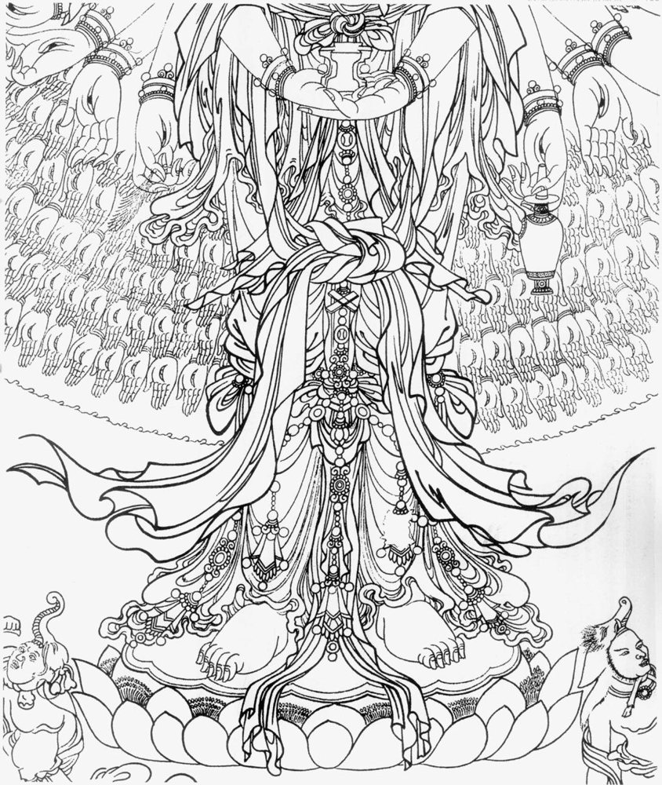
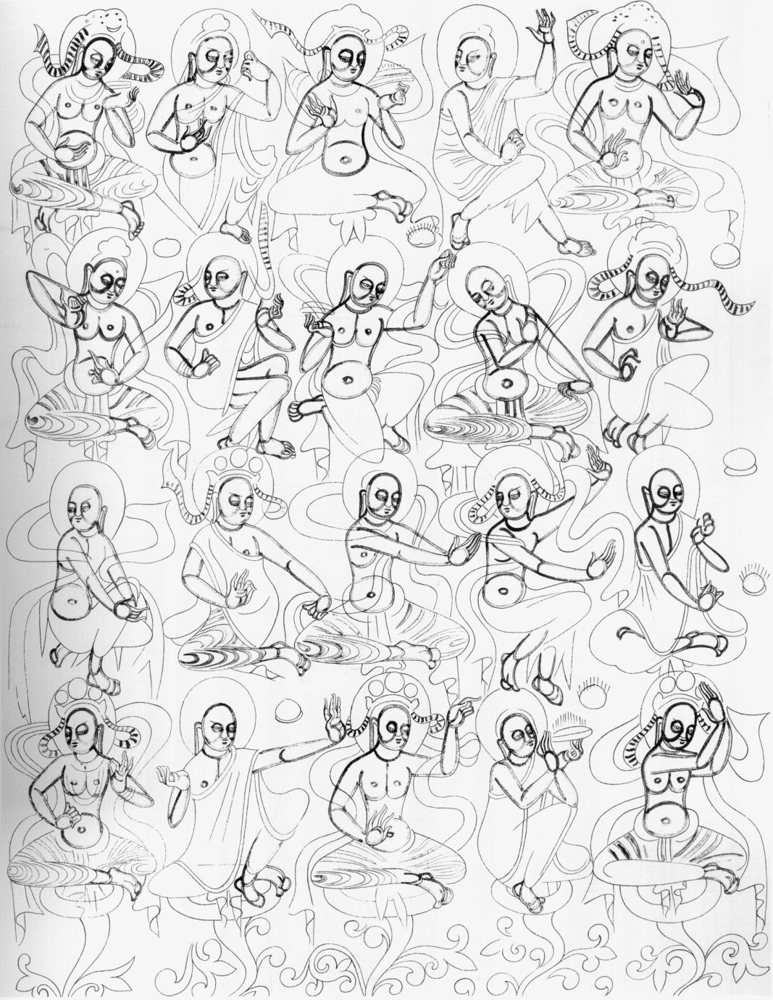
Study cues
- When using these line drawings, why must you write both the cave number and the dynasty? Explain with examples from two different dynasties.
- What is the key point in the structure of the three-hare caisson ceiling? How is it different from three hares simply placed side by side?
民間美術：湖北挑花、土錦、藍印花布
Scope. This picture book collects three crafts still part of everyday life in Hubei: cross-stitch (tiaohua), Tujia brocade (xilankapu) and blue-and-white printed cloth. Lu Jing'an's short introduction explains that cross-stitch is divided into plain cross-stitch and Huangmei coloured cross-stitch, that Tujia brocade uses continuous warps and discontinuous wefts, and compares it with Miao, Dai, Zhuang and Yao brocades. The editors classify the works by material and method, with enlarged details, so they are easy to use as patterns. Excavated pottery figures and bronzes are not included, because they have already left everyday use.
Main ideas
- Hubei folk art often uses red and black. Cross-stitch is usually set against black, which fits the taste the book describes in the people of Chu, who prized red and loved shamanic ritual. The forms allow figures to share one head, bodies to be shortened, or two birds to be gathered into a single yin-yang (taiji) circle.
- Plain cross-stitch is black thread on a white ground or white thread on a black ground. Huangmei coloured cross-stitch uses ultramarine coarse cloth as the ground, white thread for the skeleton, then fills in warm colours such as scarlet, peach pink and orange-yellow, with accents of pale green, dark green and lake blue.
- A coloured cross-stitch square kerchief is made up of a central medallion, border flowers, corner flowers and filler flowers. The centre often uses rotation, convergence, radiation or diagonals, creating "a circle within the square". The pattern must follow the warp and weft of the cloth, so figures from opera are exaggerated with zigzag lines; for example, a kneeling pose is bent into right angles.
- The stitches are mainly cross stitch, combined with straight stitch, open stitch, drawn stitch and double-sided stitch. Auspicious phrases, in lines of five or four characters, are arranged into the picture to add content.
- Tujia brocade is abstract yet still keeps the image of things; the book gives pattern names such as "small animals" and "little horses". Blue-and-white printed cloth is the third part, alongside cross-stitch and Tujia brocade; regional examples include aprons from Jianli and Macheng and kerchiefs from Yangxin and Tongshan.
Methods
- Break one coloured cross-stitch piece into the central medallion, border flowers, corner flowers and filler flowers, and note whether the centre uses rotation, convergence, radiation or diagonals.
- Turn one figure into zigzag lines that follow the warp and weft, and state which part is exaggerated (the angle of a joint, or the facial features).
- For cross-stitch, hand in one cross-stitch unit; for Tujia brocade, hand in one unit of continuous warp and discontinuous weft; next to each, write the limits set by the material.
- Give blue-and-white printed cloth a page of its own: record how the stencil repeats, whether the cloth is used for clothing or as a kerchief, and the region.
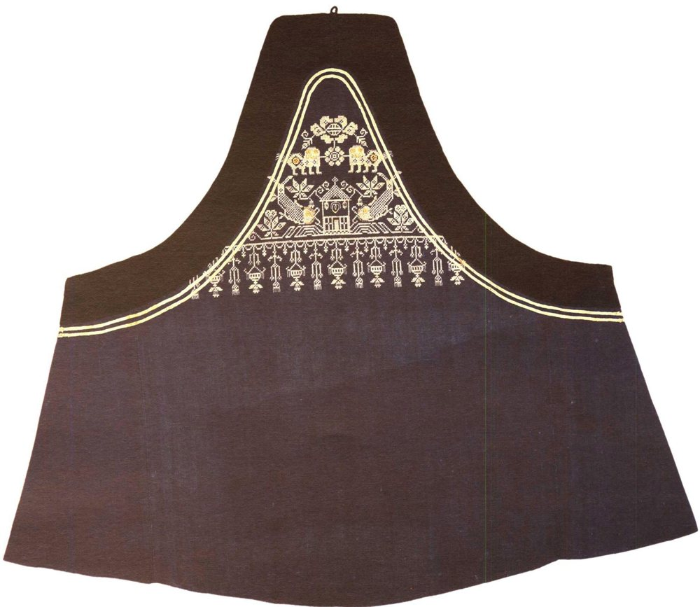
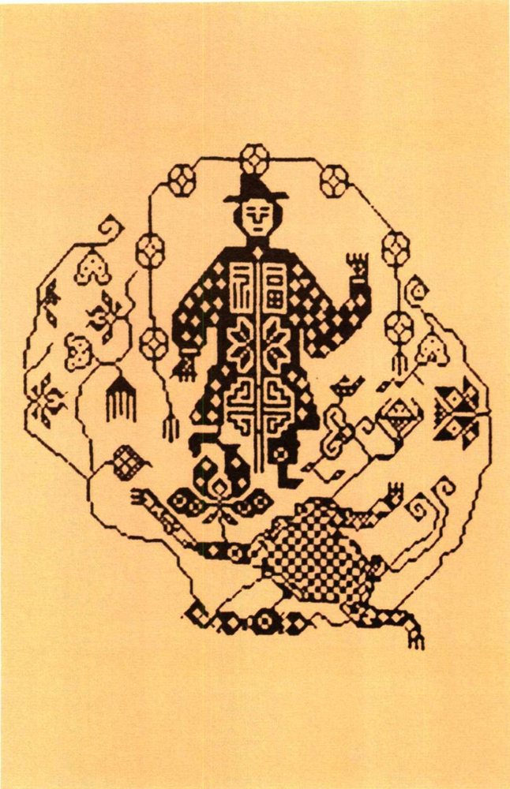
Study cues
- In Huangmei coloured cross-stitch, what are the ground colour, the skeleton line and the warm colours? What role do the cool colours play in the picture?
- Which forces shapes to follow the grid: the cross stitch of cross-stitch, or the continuous warp and discontinuous weft of Tujia brocade? Explain using a figure's pose.
裝飾文叢特別策劃卷7
Scope. This volume is a special issue of the essay series from the journal 《裝飾》 (Decoration). Its articles centre on luxury, fashion and Chinese creativity; it is not a pattern catalogue. The historical part uses Yuan Zai's Yunhui Hall, Guo Ziyi's mansion and Ma Lin's central hall in the Tang to show how buildings and furnishings broke the sumptuary rules. The contemporary part discusses what a luxury good is, the history of luxury, and what China's creative industries could do; the authors include Zhang Bohai, Yi Hong, Liu Bingsen and Xu Wei. As you read, get clear on the question "who is decoration made for?"
Main ideas
- A large share of Tang aristocratic luxury went into buildings: choice of site, the form of the mansion and its scale. Yuan Zai built grand mansions in both the north and south of Chang'an, with pavilions in the near suburbs and villas south of the city in a continuous spread; the histories call his halls the finest of their time.
- The Yunhui Hall had walls coated with fragrant herbs from Khotan, beams of agarwood and sandalwood, doors and windows of gold and silver, plus screens of xuanli jade, curtains of purple silk gauze and "dragon-whisker" whisks. The materials themselves carried out the task of "rivalling the emperor".
- After the An Lushan Rebellion, nobles competed in building ever grander mansions, which were even called "timber demons". Ma Lin's central hall cost an enormous sum, and afterwards people were ordered not to exceed the rules. Here decoration is a question of ritual order.
- The contemporary essays discuss luxury from Western brands to the East, and ask what kind of eye we should bring to consumption, and what path Chinese creativity should take.
- Fashion is described as "the fashion of a moment". Architectural designs by Zaha Hadid's practice and shoes she designed are put in the same discussion, to show that fashion enters both architecture and products.
Methods
- Make a materials table for the Yunhui Hall: wall coating, beams, doors and windows, screens, curtains. For each item, use the book's source to write how it shows the rules being broken.
- Read one contemporary essay, and write three sentences on "what luxury is" using only that author's definitions; do not swap them for your own slogans.
- Put Hadid's architectural design next to her shoes, and write how fashion changes the outward form of both.
- Hand in your essay with three examples: one of ritual order (a Tang mansion), one of competition (a grander mansion), and one of the fashion of a moment (contemporary design).
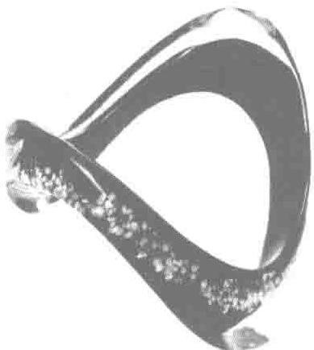
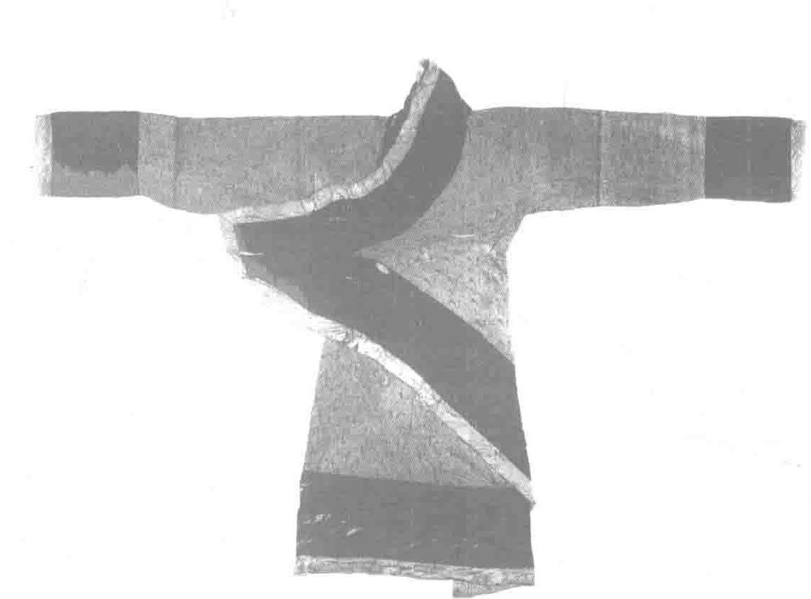
Study cues
- At least which three materials or furnishings did the Yunhui Hall use to display luxury? Write them as the book records them.
- This volume puts Hadid's architecture and shoes together. Which feature of fashion is it trying to show?
貴州傳統蠟染-攝影集
Scope. This is a photo collection of traditional Guizhou batik. It opens with an essay that moves from the rise and decline of Chinese batik, its origin stories and four regional styles, to the meanings of its patterns, its place in daily life, its makers and traditional methods. The key types are Zhenning, Nayong, Chong'anjiang and Danzhai. Products from the Anshun factory are excluded from "traditional". Most photos note the part of the garment and its size, such as a Nayong sleeve, which makes them good for sorting by region, rather than just judging whether the blue and white look nice.
Main ideas
- The book records two origin legends: in one, Wa Shuang finds that beeswax melted by the sun leaves white flowers on a blue ground; in the other, a girl's cloth is splashed with beeswax and white flowers appear after dyeing in indigo. The legends explain how "leaving white" was discovered.
- Historical records describe the method in three stages: cloth was stretched over a bronze drum and rubbed with wax, transferring the drum's pattern to the cloth; then the cloth was clamped between two carved wooden boards and wax was poured in; only later was a copper wax knife dipped in wax to draw freely. The last method freed the pattern from the ready-made designs of the bronze drum.
- The Zhenning type is batik on Buyi clothing: sleeves have spirals, rays, flowers and leaves; skirts have net patterns and dots; it is used together with embroidery, in dark and light blue, and its style is bright and crisp. Married women's jiake ("false shell") headdresses also use batik borders.
- The Nayong type is mostly Miao: the Slanted-Comb Miao often use blue and white, while the Qing Miao use red, yellow, blue and white. The patterns are mainly stylised butterflies and flowers and geometric shapes, used on sleeves, collars, backs, bibs, skirts and baby carriers. The Chong'anjiang type is fine and neat, with geometric patterns appearing together with highly stylised birds, butterflies, fish and flowers. The Danzhai type uses larger pieces and freer compositions.
- Traditional batik has its place in clothing and customs: unmarried girls may even carry their own batik baby carriers on their backs to the flower-dancing festival. Pattern meanings must follow what the book says for that region; you cannot apply one symbol to every type.
Methods
- Make an identification table for the four types. Assign each piece of cloth to only one type, and give two pieces of evidence: region or ethnic group, and main motif (spirals, butterflies and flowers, fine geometry, or freer large pieces).
- Write a short paragraph on the three stages of method: wax rubbed on a bronze drum, wax clamped between wooden boards, wax drawn with a copper knife. Explain how the third stage turned drawing into creation.
- Copy one corner of a Nayong sleeve, keeping the relationship of white flowers on a blue ground, and do not add realistic shading.
- Choose one motif from "the meanings of patterns", use only the book's explanation, and note the region that uses it.
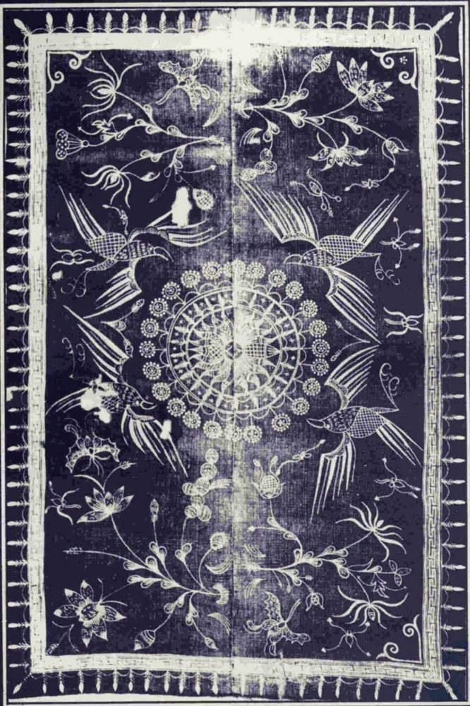
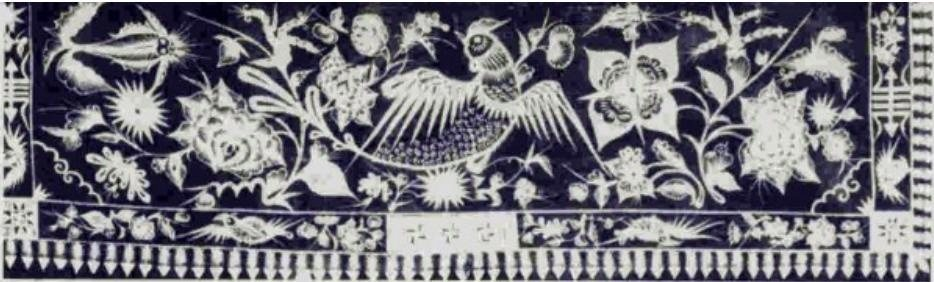
Study cues
- Of the Zhenning, Nayong, Chong'anjiang and Danzhai types, which is the neatest and finest, and which is the freest? Give one reason from the book for each.
- How do wax rubbed on a bronze drum and wax drawn with a copper knife differ in the freedom they give the pattern?